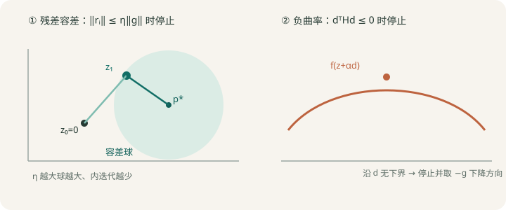

7.1.2 线搜索 Newton–CG 方法：用共轭梯度解牛顿方程
直接分解 Hₖ 在大规模问题上不可行。线搜索 Newton–CG（截断牛顿法）用共轭梯度法只靠 Hessian–向量乘积近似求解 Hₖpₖ=−gₖ，并在残差较小时提前停止，再把 pₖ 交给线搜索。
为什么用 CG 解牛顿方程
牛顿法每步要求解 Hₖpₖ=−gₖ，其中 Hₖ=∇²f(xₖ)。对大尺度问题，Hessian 稠密时一次分解约 O(n³) 次运算、O(n²) 内存，直接解不可行。
共轭梯度法求解对称正定系统 Hp=−g，只需反复计算矩阵–向量乘积 Hd。若把 H 看成算子（由有限差分、自动微分或解析公式给出乘积），就可以避开矩阵的存储与分解。截断牛顿法正是这个思路：用 CG 近似求解牛顿方程，残差足够小时就停。
CG 从 z₀=0、r₀=g、d₀=−r₀ 出发，逐步更新近似解 zᵢ、残差 rᵢ 与共轭方向 dᵢ；每一步恰好需要一次 Hessian–向量乘积。与直接分解不同，它给出的是不精确解，但恰好落在此前讨论的不精确牛顿框架内。
残差容差停止
不需要把系统解到底，也不需要固定内迭代次数。给定 forcing 项 ηₖ∈(0,1)，当残差满足相对容差时停止，取当前 zᵢ 作为不精确牛顿步：
ηₖ 越大，内迭代越少、外层收敛越慢；ηₖ 越小则相反。实用取舍是 ηₖ=min(0.5, √‖gₖ‖)：离解较远时可宽松，接近解时自动收紧。这与 7.1.1 的 forcing 项完全一致——ηₖ→0 时外层超线性收敛。正是这个相对容差让 Newton–CG 成为“不精确牛顿法”的一个具体实例。
负曲率中断
CG 的推导假设 H 对称正定。若某一步遇到 dᵢᵀH dᵢ ≤ 0，则沿方向 dᵢ 的二次模型没有下界（负曲率），继续迭代不会给出可信的下降步。此时必须中断内迭代：
若这是第 0 步（即 d₀=−gₖ 本身就不带正曲率），直接取 pₖ=−gₖ 作为下降方向；否则取当前的 zᵢ 作为 pₖ。这样保证返回的方向仍然是一个下降方向，交给线搜索继续过程。
算法步骤
把上述规则写出来，就得到线搜索 Newton–CG（Nocedal & Wright, Algorithm 7.1）。给定 x₀、容差 ε>0 与 forcing 项 ηₖ：
（1）若 ‖gₖ‖≤ε 则停；（2）用截断 CG 近似求解 Hₖp=−gₖ，直到 ‖rᵢ‖≤ηₖ‖gₖ‖ 或遇到负曲率；（3）沿 pₖ 做线搜索（如 Wolfe 条件）并令 xₖ₊₁=xₖ+αₖpₖ；（4）k←k+1 重复。
截断 CG 的内循环：先检查正曲率，再检查相对残差。任一条件给出停止信号（残差达标或负曲率）就返回 pₖ，交给线搜索。
二维可复现算例
取二次函数 f(x)=½xᵀHx−gᵀx，H=[[4,1],[1,3]]（对称正定，特征值约 2.38 与 4.62），−g=(−4,−6)。真解 p*=−H⁻¹g=(6/11,20/11)≈(0.5455,1.8182)。
（1）η=0.5：容差 0.5‖g‖≈3.61。第 1 次内迭代后 ‖r₁‖≈1.44 已达标，返回 p≈(0.9455,1.4182)，且 gᵀp≈−12.29<0，是一个下降方向。
（2）η=0.01：容差约 0.072。第 1 步后 ‖r₁‖≈1.44 不够小，第 2 步后残差归零，返回精确解 (6/11,20/11)。二维问题 CG 最多 2 步终止，这也是它精确性的来源。
（3）对不定矩阵 H=diag(1,−1)、g=(1,1)，初始方向 d₀=(−1,−1) 给出 d₀ᵀHd₀=0，程序按负曲率规则中断并返回 −g=(−1,−1)。
以上均为教学示意，用来区分两条停止规则，不是对任何真实大规模问题的性能测量。

交互：forcing 项如何决定内迭代
固定 H=[[4,1],[1,3]]、g=(−4,−6)，用滑块选择 forcing 项 ηₖ。面板实时报告 CG 内迭代次数、停止原因和返回方向是否下降。
实时内迭代检查
拖动滑块观察：η 较大时内迭代一次就停止，η 很小时需要两次。两者返回的方向都满足 gᵀp<0。
Python：截断 CG 与两条停止规则
下面的程序只依赖标准库。它实现截断 CG，重现上面的两个容差算例与一个负曲率分支，并断言停止原因、下降性与精确解。
"""Truncated Newton-CG on a 2D quadratic, plus a negative-curvature stop guard."""
def matvec(M, v):
return (M[0][0]*v[0] + M[0][1]*v[1], M[1][0]*v[0] + M[1][1]*v[1])
def dot(u, v):
return u[0]*v[0] + u[1]*v[1]
def norm(v):
return dot(v, v) ** 0.5
def newton_cg(H, g, eta, max_iter=10):
"""Approximately solve H p = -g; stop when ||r|| <= eta*||g|| or curvature <= 0."""
z, r = (0.0, 0.0), (g[0], g[1])
d, rr, tol = (-r[0], -r[1]), dot(r, r), eta * norm(g)
for i in range(max_iter):
Hd = matvec(H, d)
curvature = dot(d, Hd)
if 0.0 >= curvature:
return (z if i > 0 else (-g[0], -g[1])), i, "negative curvature"
alpha = rr / curvature
z = (z[0] + alpha*d[0], z[1] + alpha*d[1])
r = (r[0] + alpha*Hd[0], r[1] + alpha*Hd[1])
if tol >= norm(r):
return z, i + 1, "residual tolerance"
beta = dot(r, r) / rr
rr = dot(r, r)
d = (-r[0] + beta*d[0], -r[1] + beta*d[1])
return z, max_iter, "iteration cap"
def main():
H, g = ((4.0, 1.0), (1.0, 3.0)), (-4.0, -6.0)
loose = newton_cg(H, g, 0.5)
tight = newton_cg(H, g, 0.01)
indefinite = newton_cg(((1.0, 0.0), (0.0, -1.0)), (1.0, 1.0), 0.3)
assert loose[1] == 1 and loose[2] == "residual tolerance"
assert dot(g, loose[0]) < 0.0
assert tight[1] == 2 and abs(tight[0][0] - 6.0/11.0) < 1e-12
assert indefinite[2] == "negative curvature" and indefinite[0] == (-1.0, -1.0)
print("eta=0.50 -> steps", loose[1], loose[2], "p", tuple(round(v, 4) for v in loose[0]), "g.p", round(dot(g, loose[0]), 3))
print("eta=0.01 -> steps", tight[1], tight[2], "p", tuple(round(v, 4) for v in tight[0]))
print("indefinite -> steps", indefinite[1], indefinite[2], "p", indefinite[0])
if __name__ == "__main__":
main()程序只处理固定的二维教学矩阵，用来验证停止规则；它不是通用 Newton–CG 求解器，不含线搜索、预条件、有限精度处理或非二次函数的外层循环。
这一页的边界
本文只描述线搜索 Newton–CG 的内层停止与外层框架，不展开预条件（7.1.4）与信赖域版本（7.1.3）。负曲率处理只保证“返回一个下降方向”，不保证这一步最优；实际实现还要处理舍入误差导致的小负曲率、内迭代次数上限与重正交。把这些规则当成性能保证是过度解读。